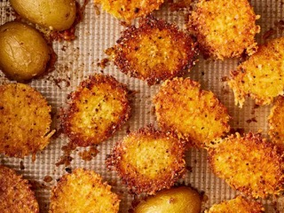

Tiktok Parmesan-Crusted Roasted Potatoes

Desctription
Grated Parmesan cheese gives these roasted potatoes a lovely crisped exterior. I found that spreading the Parmesan-butter mixture directly onto the crosshatched potatoes helped it to stick better than doing it the way you see all over TikTok (spreading the parmesan mixture in an even layer on the bottom of the baking pan and placing the potatoes on top).
Ingredients
These are the ingredients you'll need to make this top-rated homemade tiktok recipe:
- 2 tablespoons unsalted butter
- 1 (24 ounce) package baby Yukon Gold potatoes, halved
- ½ cup freshly grated Parmesan cheese
- 1 ½ teaspoons garlic and herb seasoning
- 1 teaspoon kosher salt
Steps
- Preheat oven to 425 degrees F (220 degrees C). Place butter in a 9 x 13-inch baking dish or nonstick baking pan and place in the oven until the butter melts, about 4 minutes.
-
While the butter melts, score potatoes about 1/4-inch-deep in a diamond pattern (crosshatch). Set aside.
-
Remove the pan from the oven and let cool slightly, about 2 minutes. Stir Parmesan cheese, garlic and herb seasoning, and salt into butter to form a paste. Spread about 1 teaspoon of the Parmesan paste on the cut-side of each potato; arrange, cut-side down, in the pan. Place in the preheated oven.
-
Bake until the potatoes are tender and the Parmesan creates a golden crust on the bottom of the potatoes, about 25 minutes. Let stand 5 minutes before using a spatula to release potatoes from pan.